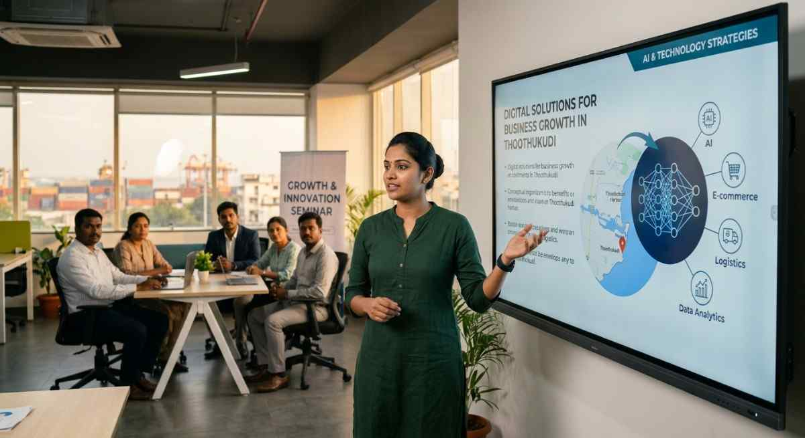

How Digital Solutions Are Helping Thoothukudi Businesses Grow
Discover how businesses in Thoothukudi are leveraging digital transformation, AI, automation, cloud technologies, and custom software to boost efficiency, enhance customer experiences, and achieve sustainable growth with Queen Touch Technology (QTT).
Businesses in Thoothukudi are embracing digital transformation to stay competitive in an increasingly technology-driven world. From automation and cloud computing to AI-powered business solutions, digital technologies are helping organizations improve efficiency, reduce costs, and deliver better customer experiences.
At Queen Touch Technology (QTT), we help businesses across Thoothukudi modernize their operations through custom software development, AI solutions, business automation, cloud services, websites, mobile applications, ERP, and CRM systems. Our mission is to empower local businesses with technology that drives sustainable growth.
1. Automating Business Operations
Manual processes consume valuable time and increase the chances of human error. Business automation helps organizations streamline daily operations such as inventory management, billing, customer support, HR processes, and reporting. By automating repetitive tasks, businesses can improve productivity while allowing employees to focus on strategic work.
2. Building a Strong Digital Presence
Today, customers search online before making purchasing decisions. A professional website combined with SEO, social media, and digital marketing helps businesses in Thoothukudi reach more customers, establish credibility, and generate quality leads around the clock.
3. AI-Powered Business Intelligence
Artificial Intelligence enables businesses to analyze customer behavior, predict trends, automate customer interactions, and make smarter decisions using real-time insights. AI-powered dashboards and analytics provide business owners with valuable information to improve operational performance and customer satisfaction.

4. Cloud Solutions for Better Collaboration
Cloud technologies allow teams to securely access business applications and data from anywhere. Whether it's cloud hosting, backup solutions, file sharing, or collaborative business applications, cloud computing improves flexibility, security, and business continuity while reducing infrastructure costs.
5. Custom Software for Sustainable Growth
Every business has unique requirements that generic software cannot always meet. Custom software solutions such as ERP systems, CRM platforms, inventory management software, and mobile applications help businesses optimize workflows, improve customer service, and scale efficiently as they grow.
"Digital transformation is no longer an option—it's the foundation for sustainable business growth. At Queen Touch Technology, we help businesses in Thoothukudi leverage technology to work smarter, serve customers better, and achieve long-term success."
Accelerate Your Business with Digital Solutions
Ready to modernize your business? Partner with Queen Touch Technology for custom software, AI solutions, business automation, cloud services, and digital transformation tailored to your business goals.
Get a Free Consultation